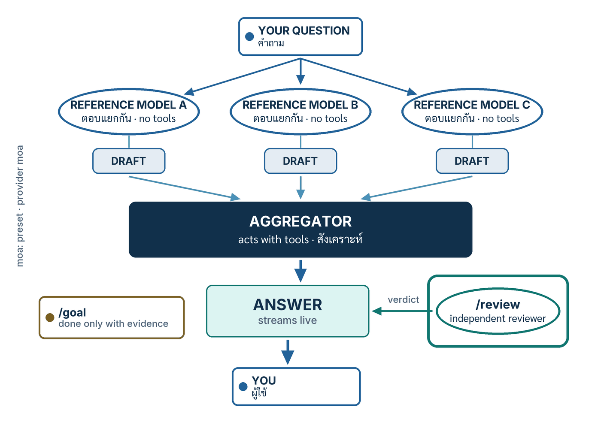

ในบทความนี้
- 1. ไม่มีคำสั่ง /council — แล้ว "สภา" ใน Hermes คืออะไร
- 2. Mixture of Agents ทำงานอย่างไร
- 3. ขั้นตอน — สร้างสภาของเราเอง
- 4. อ่านสิ่งที่สภาพูด — labelled block, ความล้มเหลว และ trace
- 5. ด่านที่สอง — /review
- 6. นิยามคำว่า "เสร็จ" ด้วยหลักฐาน — /goal
- 7. ปุ่มควบคุมต้นทุนและความเร็ว
- 8. แผงที่มองเห็นได้ และสิ่งที่ไม่ควรติดตั้ง
- 9. สรุป
In this post
- 1. There Is No /council — What "Council" Means in Hermes
- 2. How Mixture of Agents Works
- 3. Procedure — Build the Council
- 4. Reading What the Council Said — Labelled Blocks, Failures and Traces
- 5. The Second Check: /review
- 6. Define Done as Evidence: /goal
- 7. Cost and Speed Knobs
- 8. A Visible Panel, and What Not to Install
- 9. Summary
🤔 ถ้า agent ตอบผิด แล้วไม่มีใครตรวจก่อนที่คำตอบจะถึงมือเรา — เราจะรู้ตอนไหน? คำถามนี้ไม่ได้เกิดจากความไม่ไว้ใจโมเดล แต่เกิดจากข้อเท็จจริงง่าย ๆ ว่าคำตอบที่ผิดกับคำตอบที่ถูกมาถึงหน้าจอด้วยหน้าตาเหมือนกันทุกประการ
ตอนที่แล้ว — #3 Profiles — หนึ่ง agent ต่อหนึ่งบทบาท — เราแยก agent ออกเป็นหลายบทบาท แต่ละบทบาทมี home directory, SOUL.md, ความจำและโมเดลของตัวเอง[6] คำถามถัดไปตามมาเองอย่างเป็นธรรมชาติ: ถ้าเรามีหลายบทบาทแล้ว จะให้บทบาทหนึ่งตรวจงานของอีกบทบาทหนึ่งก่อนที่งานจะถึงมือเราได้ไหม
คำตอบหนึ่งบรรทัดของตอนนี้คือ Hermes ไม่มีคำสั่ง /council — แต่สิ่งที่ผู้อ่านเรียกว่า "สภา" สร้างได้จริงจากสามกลไกทางการที่มีอยู่แล้วใน Hermes Agent v0.21.0 คือ Mixture of Agents (หลายโมเดลปรึกษากันก่อนตอบ), /review (ผู้ตรวจอิสระตรวจงานก่อนเรารับ) และ /goal (สัญญาว่า "เสร็จ" แปลว่ามีหลักฐาน) บทความนี้พาไปสร้างทั้งสามอย่างทีละคำสั่ง พร้อมบอกต้นทุนที่ต้องจ่าย
1. ไม่มีคำสั่ง /council — แล้ว "สภา" ใน Hermes คืออะไร
ขอตอบตรง ๆ ก่อนเป็นอย่างแรก เพราะเรื่องนี้มีข้อมูลผิดหมุนอยู่ในอินเทอร์เน็ตพอสมควร: Hermes Agent v0.21.0 (tag v2026.8.31) ไม่มีคำสั่ง /council หน้าอ้างอิง slash command ทั้งหน้าไม่มีคำนี้อยู่เลย[3] และการค้นคำว่า council ทั้ง repository ผ่าน GitHub code search ให้ผลลัพธ์เดียว ซึ่งเป็นไฟล์ทดสอบที่ไม่เกี่ยวข้องกัน
เรื่องที่ทำให้คนสับสนคือมันเคยมีอยู่จริง — นานประมาณสองชั่วโมง PR #84904 ชื่อ "Model Council mode — user-facing multi-model deliberation (/council)" ถูก merge เมื่อ 2026-08-13 เวลา 02:44 UTC เพิ่มฟิลด์ synthesis_style ต่อ preset (guidance เป็นค่าตั้งต้น หรือ council) และคำสั่ง /council ที่ "โมเดลอ้างอิงตอบอย่างอิสระ แล้วโมเดลที่ลงมือทำทำหน้าที่ประธานการปรึกษา ส่งรายงานที่ผู้ใช้อ่านได้ว่าที่ประชุมเห็นตรงกันตรงไหน ขัดแย้งกันตรงไหน แต่ละโมเดลเสนออะไรที่ไม่ซ้ำใคร และข้อเสนอแนะพร้อมระดับความมั่นใจที่ระบุชัด"[10] จากนั้น PR #84994 ก็ revert มันทั้งชุดในวันเดียวกันเวลา 04:50 UTC (10 ไฟล์ +24/−407)[10]
บันทึกการออกรุ่น v0.21.0 จึงระบุไว้ในหัวข้อ "Reverted in this window (not shipping)" ตรง ๆ ว่า "Model Council mode (/council) — landed then reverted; not in this release."[8] ผมย้ำข้อนี้เพราะบทความและวิดีโอจำนวนหนึ่งที่เขียนขึ้นในสัปดาห์นั้นยังพูดถึง /council ราวกับเป็นฟีเจอร์ที่ใช้ได้ ถ้าพิมพ์แล้วไม่มีอะไรเกิดขึ้น นั่นไม่ใช่ความผิดของเครื่องเรา
{kind=link}

แต่คำว่า "สภา" ที่ผู้อ่านต้องการนั้นไม่ได้หมายถึงชื่อคำสั่ง มันหมายถึงกลไกที่ทำให้มีมากกว่าหนึ่งความเห็นมองคำตอบก่อนที่คำตอบจะถึงมือเรา และกลไกแบบนั้น Hermes มีอยู่แล้วสามอย่าง โดยเรียกด้วยชื่อทางการของมันเอง
- Mixture of Agents (MoA) — โมเดลอ้างอิงหลายตัวตอบแยกกันเป็นการส่วนตัวก่อน แล้วโมเดลผู้สังเคราะห์หนึ่งตัวเป็นผู้ลงมือและเขียนคำตอบจริง[1]
/review— subagent ผู้ตรวจอิสระที่มีเครื่องมือครบชุด ถูกส่งไปตรวจผลงานที่บทสนทนาเพิ่งผลิตออกมา แล้วรายงานกลับเข้ามาในห้องแชทเดิม[2]/goalcompletion contract — สัญญาที่ผู้ตัดสินจะประกาศว่าdoneก็ต่อเมื่อเงื่อนไขการตรวจสอบถูกทำให้สำเร็จด้วยหลักฐานที่จับต้องได้ ไม่ใช่คำกล่าวอ้างว่าเสร็จแล้ว[4]
สามอย่างนี้อยู่กันคนละชั้นและไม่ทดแทนกัน MoA ทำงานภายในเทิร์นเดียว ส่วน /review เป็น subagent ที่แยกออกไปทำงานเบื้องหลัง ใครที่อยากเห็นแผนที่ของชั้นต่าง ๆ ในระบบหลาย agent ของ Hermes อย่างครบถ้วน ผมเขียนไว้แล้วในตอนวิเคราะห์ Hermes #2 Agent Teams ซึ่งไล่ทั้งสี่ชั้น — subagent ในเซสชัน, บอร์ด Kanban, Bot Mode กับ A2A และการเสิร์ฟหลาย profile — และชี้ไว้ตรงนั้นแล้วว่า MoA ไม่ใช่ การมอบหมายงาน แต่เป็น "virtual model provider" ตอนนี้เราจะไม่เล่าซ้ำ แต่จะลงมือสร้างของจริงบนหน้าจอ Hermes Desktop
2. Mixture of Agents ทำงานอย่างไร
MoA คือ virtual model provider เอกสารทางการเปิดหัวข้อด้วยประโยคนี้ตรง ๆ ว่า "Mixture of Agents is a virtual model provider. Each named MoA preset appears as a selectable model under the moa provider."[1] แปลเป็นภาษาที่ใช้งานได้คือ preset ที่เราตั้งชื่อไว้ จะโผล่ขึ้นมาในช่องเลือกโมเดลเหมือนโมเดลตัวหนึ่ง — ทั้งใน CLI, TUI, Hermes Desktop และ gateway
ความเข้าใจผิดที่พบบ่อยที่สุดคือคิดว่าโมเดลทุกตัวใน preset ช่วยกันตอบ ความจริงไม่ใช่ ในหนึ่งรอบการเรียกโมเดล Hermes ทำตามลำดับนี้[1]
- หา preset ที่เลือกไว้จากชื่อ
- รันโมเดลอ้างอิงทั้งหมด โดยไม่ส่ง tool schema ไปด้วย — โมเดลอ้างอิงเห็นเฉพาะข้อความ user/assistant ของบทสนทนา ไม่เห็น system prompt ของ Hermes และไม่เห็น transcript ของการเรียกเครื่องมือ
- เอาผลลัพธ์ของโมเดลอ้างอิงไปต่อท้ายเป็น context ส่วนตัวสำหรับผู้สังเคราะห์
- เรียก aggregator ที่ตั้งค่าไว้ พร้อม tool schema ปกติของ Hermes
- ถือว่าคำตอบของ aggregator คือคำตอบจริงของโมเดล และถ้ามันเรียกเครื่องมือ Hermes ก็รันเครื่องมือตามปกติ
- รอบถัดไปกระบวนการเดิมเกิดซ้ำบนบทสนทนาที่อัปเดตแล้ว รวมผลลัพธ์จากเครื่องมือด้วย
โมเดลอ้างอิงให้คำปรึกษา ผู้สังเคราะห์เป็นคนลงมือ
ข้อสรุปเชิงปฏิบัติของลำดับข้างบนมีสองข้อ ข้อแรก — aggregator คือ "the acting model" มันคือโมเดลที่เขียนคำตอบและเป็นตัวเดียวที่เรียกเครื่องมือได้ ข้อสอง — โมเดลอ้างอิงไม่เคยตอบผู้ใช้โดยตรง มันเป็นที่ปรึกษา (advisors) ที่พูดกับ aggregator เท่านั้น[1] ดังนั้นคุณภาพของ preset จึงขึ้นกับการเลือก aggregator มากกว่าจำนวนที่ปรึกษา
เหตุผลที่โมเดลอ้างอิงไม่ได้รับ tool schema เอกสารระบุไว้ตรง ๆ ว่าเพื่อให้ "reference calls stay cheap and avoid strict-provider rejections"[1] — คือถูกลง และไม่ชนกับ provider ที่ตรวจ schema เข้มงวด นี่คือเหตุผลว่าทำไมโมเดลเล็กหรือโมเดลบนเครื่องเราถึงนั่งเก้าอี้ที่ปรึกษาได้ ทั้งที่อาจเรียกเครื่องมือได้ไม่ดีนัก
เป็นพลเมืองชั้นหนึ่งตั้งแต่ v0.18.0
MoA ไม่ใช่ของใหม่ในรุ่นนี้ มันกลายเป็นพลเมืองชั้นหนึ่งตั้งแต่ Hermes Agent v0.18.0 (tag v2026.7.1 เผยแพร่ 2026-07-01) ที่ทีมตั้งชื่อว่า "The Judgment Release" บันทึกการออกรุ่นเขียนว่า preset ทุกอันจะ "shows up as a selectable model under a moa provider, right alongside Claude, GPT, and Grok in every model picker (CLI, TUI, desktop, gateway)"[9] รุ่นเดียวกันยังทำให้ผลลัพธ์ของโมเดลอ้างอิงแต่ละตัว "renders as its own labelled block" และคำตอบสุดท้าย stream ให้เห็นสด ๆ — ประโยคที่ผมชอบที่สุดในบันทึกนั้นคือ "You get to watch the committee deliberate, not just read the verdict."[9]
💡 ตัวเลขที่มีในเอกสาร: หน้าเอกสาร MoA เผยแพร่ผลบน HermesBench ของ preset สองโมเดล —claude-opus-4.8เป็นผู้สังเคราะห์เหนือgpt-5.5ที่เป็นโมเดลอ้างอิง — ได้ 0.8202 เทียบกับ 0.7607 ของanthropic/claude-opus-4.8ตัวเดียว และ 0.7412 ของopenai/gpt-5.5ตัวเดียว[1] ข้อควรระวังคือนี่เป็น benchmark ภายในของ Nous Research เอง ไม่ใช่การวัดโดยบุคคลที่สาม และเอกสารไม่ได้เผยแพร่วิธีวัดหรือชุดข้อสอบ — ผมจึงอ่านมันเป็นหลักฐานว่า "ทิศทางถูก" ไม่ใช่ตัวเลขที่เอาไปอ้างในสไลด์ได้
3. ขั้นตอน — สร้างสภาของเราเอง
สภาที่ใช้งานได้จริงสร้างเสร็จในไม่กี่นาที ขั้นตอนคือสร้าง preset ชื่อ council ด้วยตัวช่วยแบบโต้ตอบใน terminal เลือกโมเดลอ้างอิงสองถึงสามตัวและผู้สังเคราะห์หนึ่งตัว แล้วเลือก preset นั้นในช่องเลือกโมเดลของ Hermes Desktop ทุกคำสั่งข้างล่างนี้ทำงานได้ทุกพื้นผิว ไม่ใช่เฉพาะ Desktop
- เปิด terminal แล้วดูของที่มีอยู่ก่อนด้วย
hermes moa list— จะเห็น preset ชื่อdefaultที่มากับเครื่อง พร้อมรายการโมเดลอ้างอิงและ aggregator ของมัน[1] - สร้าง preset ใหม่ด้วย
hermes moa configure council— เอกสารอธิบายว่าhermes moa configure [name]คือคำสั่ง "create or update a named preset"[1] ตัวช่วยจะให้เลือก provider ก่อน แล้วจึงเลือกโมเดลของ provider นั้น - เลือกโมเดลอ้างอิงทีละตัว หน้าจอจะถามซ้ำว่าจะเพิ่มอีกไหม — ผมแนะนำสองถึงสามตัวที่คิดคนละแบบ เพราะที่ปรึกษาสามตัวที่เห็นตรงกันเสมอไม่ได้ให้ข้อมูลมากไปกว่าที่ปรึกษาตัวเดียว
- เลือก aggregator เป็นลำดับสุดท้าย ให้เลือกโมเดลที่แข็งแรงที่สุดที่เรามีสิทธิ์ใช้ เพราะมันคือตัวที่เขียนคำตอบและเรียกเครื่องมือจริง
- ตรวจผลด้วย
hermes moa listอีกครั้ง แล้วเทียบกับสิ่งที่เขียนลงไฟล์config.yamlจริง ๆ ตามรูปแบบข้างล่าง - ใน Hermes Desktop เปิดช่องเลือกโมเดลที่ composer — เอกสาร MoA ระบุว่าเมนูจะมีหัวข้อ
MoA presetsและเมื่อเลือกแล้วโมเดลที่ใช้งานจะกลายเป็นMoA: council[1] ถ้าถนัดพิมพ์มากกว่า ใช้/model council --provider moaได้เหมือนกัน - ถามคำถามจริงที่มีคำตอบผิดได้หลายแบบ — คำถามที่ตอบยังไงก็ถูกจะไม่แสดงให้เห็นว่าสภาทำงานหรือเปล่า
- อ่าน labelled block ของโมเดลอ้างอิงแต่ละตัวก่อน แล้วค่อยอ่านคำตอบที่สังเคราะห์แล้ว — ลำดับนี้สำคัญ เพราะถ้าอ่านคำตอบสุดท้ายก่อน เราจะเห็นด้วยกับมันแล้วอ่านที่ปรึกษาแบบหาเหตุผลสนับสนุน
- ถ้าอยากถามสภาแค่คำถามเดียวโดยไม่เปลี่ยนโมเดลของเซสชัน ใช้
/moa <prompt>— เอกสารระบุว่ามันรัน prompt เดียวผ่าน preset ที่เป็น default แล้วคืนโมเดลเดิมให้ "One-shot — does not change your session model" และพิมพ์/moaเปล่า ๆ จะขึ้นวิธีใช้เฉย ๆ[3] - เมื่อได้คำตอบที่พอใจแล้ว อย่าเพิ่งรับ — พิมพ์
/reviewเพื่อส่งผู้ตรวจอิสระไปตรวจผลงานนั้นอีกชั้น ตามที่จะเล่าในหัวข้อที่ 5 แล้วจึงตัดสินใจว่าจะรับ จะสั่งแก้ หรือจะสั่งหยุด
ถ้าอยากเขียนเองมากกว่ากดเลือก ไฟล์ ~/.hermes/config.yaml รับ preset ในรูปแบบนี้ ทุกคีย์และทุกค่าข้างล่างคัดมาจากหน้าเอกสาร MoA และจากค่าตั้งต้นใน hermes_cli/config_defaults.py โดยตรง
moa:
default_preset: council # preset ที่ /moa จะใช้เมื่อไม่ระบุชื่อ
active_preset: "" # ค่าตั้งต้นคือว่าง = ไม่บังคับ preset ใดกับทุกเซสชัน
save_traces: false # true = เขียน trace ของทุกเทิร์นเป็น JSONL
presets:
council:
reference_models:
- provider: openai-codex
model: gpt-5.5
- provider: openrouter
model: deepseek/deepseek-v4-pro
aggregator:
provider: openrouter
model: anthropic/claude-opus-4.8
max_tokens: 4096
fanout: user_turn # ที่ปรึกษาทำงานครั้งเดียวต่อหนึ่งข้อความของผู้ใช้
enabled: true # false = ปิดการกระจายงาน ให้ aggregator ทำงานลำพังโมเดลบนเครื่องเรานั่งเก้าอี้ในสภาได้ไหม
ตอบตามที่เอกสารบอกจริง ๆ: เอกสาร MoA เขียนว่า "The config stores explicit provider/model pairs, so you can mix providers and use multiple models from the same provider"[1] และหน้า Local Models ก็เขียนว่าการเลือกโมเดลบนเครื่องเป็นโมเดลหลักใช้ model.provider: llamacpp ซึ่งเป็น "the same shape as every other provider"[5] ข้อจำกัดเรื่องช่องที่เอกสารระบุไว้มีเพียงข้อเดียวคือ aggregator ห้ามเป็น MoA preset อีกอันหนึ่ง เพราะ Hermes ปิดกั้น MoA ซ้อน MoA ไว้โดยตั้งใจ[1]
ดังนั้นในเชิงโครงสร้าง โมเดลจาก #2 Local Models นั่งเป็นที่ปรึกษาได้ และเก้าอี้ที่ปรึกษาก็เป็นเก้าอี้ที่เหมาะกับมันที่สุด เพราะที่ปรึกษาไม่ต้องรับ tool schema แต่ผมต้องพูดให้ชัดว่า เอกสารไม่ได้ยกตัวอย่างการใช้ provider บนเครื่องใน preset ของ MoA ไว้เลย ตัวอย่างทั้งหมดในหน้านั้นเป็น provider บนคลาวด์ ดังนั้นให้ถือเป็นสิ่งที่โครงสร้างรองรับและควรลองเอง ไม่ใช่สูตรที่ผมยืนยันแทนเอกสารได้
4. อ่านสิ่งที่สภาพูด — labelled block, ความล้มเหลว และ trace
สิ่งที่ทำให้ MoA เป็น "สภา" ที่ดูได้ ไม่ใช่กล่องดำ คือการที่ผลลัพธ์ของโมเดลอ้างอิงทุกตัวถูกแสดงเป็นบล็อกที่มีป้ายชื่อของมันเอง ก่อนที่คำตอบสังเคราะห์จะไหลออกมา บันทึกรุ่น v0.18.0 อธิบายว่าเราจะ "read what GPT-5 thought, what Claude thought, and what Grok thought, before the aggregator synthesizes them into one answer" และระบุพื้นผิวไว้สามอย่างคือ CLI, TUI และ desktop app[9] — สังเกตว่าบันทึกนั้นไม่ได้ระบุถึงแพลตฟอร์มแชทผ่าน gateway ผมจึงไม่ยืนยันว่าบล็อกเหล่านี้แสดงบน Telegram หรือ Discord ด้วย
สี่ข้อต่อไปนี้คือพฤติกรรมที่ควรรู้ก่อนใช้จริง เพราะแต่ละข้อเปลี่ยนสิ่งที่เราเห็นบนหน้าจอ
- ที่ปรึกษาล้มเหลวไม่ล้มทั้งเทิร์น — เอกสารระบุว่า "Credential failures on one reference model do not abort the turn. Hermes includes the failure in the reference context and continues with whatever models returned."[1] แปลว่าถ้า API key ของที่ปรึกษาตัวหนึ่งหมดอายุ เราจะยังได้คำตอบ — และนี่คือกับดักที่ผมอยากเตือนที่สุด เพราะสภาสามที่นั่งอาจกลายเป็นสภาสองที่นั่งโดยที่เราไม่ทันสังเกต
enabled: falseปิดการกระจายงาน — ตั้งค่านี้ที่ preset แล้ว "the aggregator acts alone, exactly as if you selected it as a plain model"[1] ใช้เป็นสวิตช์ปิดชั่วคราวได้โดยไม่ต้องลบ preset ทิ้ง- จำนวนการเรียกโมเดลเพิ่มขึ้นแน่นอน — เอกสารเขียนไว้ในหัวข้อ Notes ว่า "MoA increases model-call count. A single model iteration can involve multiple reference calls plus the aggregator call."[1]
save_tracesเก็บบันทึกทุกเทิร์น — ค่าตั้งต้นคือfalseเมื่อเปิดแล้ว Hermes จะเขียน "each MoA turn (reference + aggregator exact input/output/usage) as JSONL" ไปที่<hermes_home>/moa-traces/<session_id>.jsonlหรือไดเรกทอรีที่ระบุในmoa.trace_dir[6]
คำว่า <hermes_home> ในบรรทัดสุดท้ายสำคัญกว่าที่เห็น เพราะถ้าเราทำงานภายใต้ profile ตามตอนที่แล้ว home ของมันคือ ~/.hermes/profiles/<name>/ ไม่ใช่ ~/.hermes/ — เอกสาร Profiles อธิบายว่า profile "is a separate Hermes home directory" และ wrapper จะตั้ง HERMES_HOME ให้เองก่อนเรียก hermes[6] trace ของสภาจึงไปกองอยู่ในบ้านของ profile นั้น
moa.privacy_filter ซึ่งค่าตั้งต้นคือปิด โดย display จะปกปิดเฉพาะบล็อกที่แสดงบนหน้าจอกับ trace ที่บันทึก ส่วน full จะปกปิดข้อความที่ฉีดเข้า prompt ของ aggregator ด้วย[1] ถ้าจะส่ง trace ให้เพื่อนร่วมทีมหรือแนบใน issue เปิด display เป็นอย่างน้อยเสมอ
5. ด่านที่สอง — /review
MoA ตรวจความคิดก่อนเขียนคำตอบ ส่วน /review ตรวจผลงานหลังคำตอบออกมาแล้ว เอกสารอธิบายไว้ว่ามัน "spawns an independent, full-privilege background subagent whose only job is to review the work your conversation just produced — a PR, a diff, code, documentation, a design" และทำงาน "on every surface: CLI, TUI, the Desktop app, and every gateway messaging platform"[2]
รายละเอียดห้าข้อที่เปลี่ยนวิธีใช้จริง
- หลักฐานตั้งต้นคือสิบข้อความล่าสุด — "The last 10 user/assistant messages are snapshotted as the reviewer's starting evidence (tool output and system messages are excluded)"[2] ผลลัพธ์จากเครื่องมือไม่ถูกนับ ดังนั้นถ้างานสำคัญอยู่ในผลลัพธ์ของเครื่องมือล้วน ๆ ควรให้ agent สรุปเป็นข้อความก่อนสั่ง review
- ผู้ตรวจมีเครื่องมือครบ ไม่ได้ตัดสินจากข้อความ — subagent ได้ "the full normal subagent toolset (terminal, web, files, browser...), so it actually opens the PR, reads the diff, and runs code rather than judging from the excerpt"[2]
- ผู้ตรวจรับกติกาของโครงการไปด้วย — skill ที่ agent หลักโหลดไว้จะถูกระบุใน briefing พร้อมคำสั่งให้โหลดและตัดสินงานตามกติกานั้น และ system prompt ของมันฝังไฟล์บริบทของ workspace คือ AGENTS.md / CLAUDE.md / .cursorrules ไว้ในฐานะกติกาที่ต้องปฏิบัติตาม[2]
- รายงานกลับเข้าห้องแชทเดิม — "its full review re-enters the same session as a normal background-subagent completion" ซึ่งแปลว่า agent หลักเห็นรายงานนั้นและลงมือแก้ต่อได้ทันที[2]
- คนละอย่างกับ
/refine— เอกสารแยกไว้ชัดว่า/refineทบทวนบทสนทนาเพื่ออัปเดตความจำและ skill ส่วน/reviewทบทวน ผลงาน ที่บทสนทนาสร้างขึ้น[2]
ขั้นตอนที่ผมใช้จริงกับงานที่ต้องส่งคนอื่น มีสี่ขั้นและใช้เวลาไม่ถึงหนึ่งนาทีของเรา
- ปล่อยให้ agent ทำงานจนได้ผลงานที่จับต้องได้ — PR หนึ่งอัน diff หนึ่งชุด หรือเอกสารหนึ่งฉบับ
- พิมพ์
/reviewเฉย ๆ เพื่อให้ตรวจทุกอย่างที่สิบข้อความล่าสุดนำเสนอ หรือใส่คำสั่งเพิ่มแบบที่เอกสารยกตัวอย่างไว้คือ/review focus on security[2] - ระหว่างรอ พิมพ์
/agents(ชื่อพ้อง/tasks) เพื่อดู agent และงานที่กำลังทำงานอยู่ในเซสชันนี้[3] - ถ้าผู้ตรวจเดินผิดทาง สั่งแก้ทิศได้ระหว่างทาง — ตั้งแต่ v0.21.0 เครื่องมือ
delegate_taskรับ{"action": "steer", "subagent_id": "...", "message": "..."}เพื่อแทรกคำสั่งใหม่โดยไม่หยุดงาน และ{"action": "stop", "subagent_id": "..."}เพื่อจบงานตั้งแต่รอบถัดไป โดยผลลัพธ์บางส่วนยังกลับเข้าบทสนทนาตามปกติ[2]
ปักโมเดลของผู้ตรวจ
ค่าตั้งต้นคือผู้ตรวจใช้โมเดลเดียวกับ agent หลัก ซึ่งเป็นค่าที่ผมแนะนำให้เปลี่ยน เพราะโมเดลเดียวกันมักมองข้ามข้อผิดพลาดชนิดเดียวกัน ในไฟล์ ~/.hermes/config.yaml ปักได้ที่บล็อก auxiliary.review
auxiliary:
review:
provider: openrouter # or nous, anthropic, a direct base_url, ...
model: anthropic/claude-opus-4.6 # a strong reviewer modelค่าตั้งต้นในซอร์สคือ {"provider": "auto", "model": "", "base_url": "", "api_key": "", "api_mode": ""} โดยความเห็นในไฟล์ระบุว่า "auto" คู่กับ "" แปลว่า "main agent's model" ส่วน api_mode ใช้บังคับ transport ระหว่าง chat_completions, anthropic_messages และ codex_responses[6]
💡 กติกาที่ Hermes เขียนไว้ในตัวเอง: skill ที่มากับ repo ชื่อrequesting-code-review(เวอร์ชัน 2.0.0) ประกาศหลักการไว้บรรทัดเดียวว่า "No agent should verify its own work. Fresh context finds what you miss."[7] — ไม่มี agent ตัวไหนควรตรวจงานของตัวเอง context ที่สดใหม่คือสิ่งที่จะเห็นสิ่งที่เรามองข้าม นี่คือเหตุผลทั้งหมดที่ปุ่ม "ปักโมเดลผู้ตรวจ" มีอยู่ และเป็นเหตุผลที่ผมไม่แนะนำให้ปล่อยไว้ที่auto
เรื่องเวอร์ชันขอพูดให้ตรง: /review merge เข้า main ผ่าน PR #93339 เมื่อ 2026-08-24 เวลา 00:38 UTC[11] รุ่นที่ติดป้ายรุ่นถัดจากวันนั้นคือ v0.20.6 (tag v2026.8.27) แต่บันทึกการออกรุ่นทั้งของ v0.20.6 และ v0.21.0 ไม่ปรากฏคำว่า /review เลย ผมจึงบอกได้แค่ว่ามันอยู่ใน main มาตั้งแต่ 2026-08-24 และอยู่ในเอกสารปัจจุบัน แต่ไม่มีบันทึกทางการที่ยืนยันว่ารุ่นติดป้ายรุ่นไหนคือรุ่นแรกที่มีมัน[8]
6. นิยามคำว่า "เสร็จ" ด้วยหลักฐาน — /goal
ด่านที่สามไม่ได้ตรวจคำตอบ แต่ตรวจคำว่าเสร็จ /goal คือเป้าหมายที่ Hermes ทำงานต่อเนื่องข้ามหลายเทิร์นโดยมีโมเดลผู้ตัดสินคอยตรวจหลังทุกเทิร์น และเมื่อเราแนบ completion contract เข้าไป prompt ของผู้ตัดสินจะเปลี่ยนไปเป็นการตัดสินว่า done "only when the verification criterion is met with concrete evidence (a command result, file excerpt, test output) — not a loose 'looks done' claim"[4]
เขียนสัญญาได้สองแบบ แบบแรกให้ Hermes ร่างให้ด้วย /goal draft <text> ซึ่งเอกสารแนะนำเป็นทางหลัก แบบที่สองเขียนเองเป็นบรรทัด field: value ตามตัวอย่างที่เอกสารให้ไว้ตรง ๆ
/goal Migrate auth to JWT
verify: pytest tests/auth passes
constraints: keep the /login response shape unchanged
boundaries: only touch services/auth and its tests
stop when: a DB schema migration is requiredบรรทัดแรกที่ไม่ใช่ฟิลด์คือหัวเรื่องของเป้าหมาย ส่วนคำนำหน้าที่ระบบรู้จักได้แก่ verify:, verified by:, constraints:, preserve:, boundaries:, scope:, stop when: และ blocked: เอกสารยังระบุด้วยว่าเป้าหมายธรรมดาที่บังเอิญมีเครื่องหมายทวิภาค เช่น Fix bug: the parser drops commas จะไม่ถูกแยกผิด เพราะระบบดึงเฉพาะคำนำหน้าที่รู้จัก[4]
/goal show— พิมพ์สัญญาของเป้าหมายที่ใช้งานอยู่ออกมาดู[4]/goal gate add scripts/run_tests.sh tests/hermes_cli/test_goals.py— เพิ่ม quality gate คือคำสั่ง shell ที่ต้องคืนค่า 0 ก่อนเป้าหมายจะจบได้ เอกสารระบุว่า gate ทำงานก่อนผู้ตัดสิน และถ้า gate แดง ผู้ตัดสินจะไม่ถูกเรียกเลย[4]/subgoal <text>— เพิ่มเกณฑ์ระหว่างทางโดยไม่รีเซ็ตลูป และผู้ตัดสินจะไม่ประกาศว่าเสร็จจนกว่าทั้งเป้าหมายเดิมและทุก subgoal จะสำเร็จ[3]
ข้อจำกัดที่ต้องรู้และเอกสารพูดเองคือ ผู้ตัดสินล้มเหลวแบบเปิด (fail-open) — เอกสารเขียนไว้ว่า "If the judge errors (network blip, malformed response, unavailable aux client), Hermes treats the verdict as continue — a broken judge never wedges progress."[4] แปลว่าถ้าโมเดลผู้ตัดสินล่ม ลูปจะเดินต่อ ไม่ใช่หยุด นี่คือเหตุผลว่าทำไม quality gate ที่เป็นคำสั่ง shell จริงจึงแข็งแรงกว่าสัญญาที่เป็นข้อความล้วน และเป็นเหตุผลที่ผมใช้ทั้งสองอย่างคู่กันเสมอ
ถ้างานที่ต้องตรวจคืองานที่ไม่มีใครนั่งดู — งานตามเวลา งานเบื้องหลัง หรือ agent ที่ทำงานข้ามคืน — กลไกที่ตรงกว่าคือ verify-on-stop ที่บังคับให้ agent ต้องมีหลักฐานการตรวจสอบใหม่ก่อนจบเทิร์นที่มันแก้โค้ด และ hook ชื่อ pre_verify ที่ปลั๊กอินใช้แทรกนโยบายของเราเองเข้าไปที่จุดเดียวกัน สองอย่างนี้เป็นเนื้อหาเต็มของ #6 Automation & Agents จึงขอวางลิงก์ไว้ตรงนี้แทนการเล่าซ้ำ
7. ปุ่มควบคุมต้นทุนและความเร็ว
สภามีราคา และราคาของมันตรงไปตรงมา — เราจ่ายค่าเรียกโมเดลที่ปรึกษาเพิ่มขึ้นทุกครั้งที่พวกเขาพูด เอกสารระบุว่าเวลารอต่อเทิร์นถูกกำหนดโดยที่ปรึกษาเป็นหลัก "Advisor generation is the dominant per-turn latency" เพราะเทิร์นต้องรอที่ปรึกษาตัวที่ช้าที่สุดเขียนเสร็จ[1] ตารางนี้คือปุ่มทั้งหมดที่หมุนได้จริง พร้อมค่าตั้งต้นตามที่ปรากฏในเอกสารและใน config_defaults.py
| Knob | Config key | Default | Effect |
|---|---|---|---|
| จังหวะที่ที่ปรึกษาทำงาน | moa.presets.<name>.fanout |
user_turn |
ค่าตั้งต้นคือทำงานครั้งเดียวต่อหนึ่งข้อความของผู้ใช้ ซึ่งเอกสารเรียกว่าจังหวะที่ถูกที่สุด เพราะ "advisor cost does not multiply with the number of tool calls in a turn" ส่วน per_iteration รันที่ปรึกษาใหม่ทุกรอบเครื่องมือ โดยแลกกับการคูณทั้งเวลาและค่าใช้จ่ายด้วยจำนวนการเรียกเครื่องมือ และ every_n:3 คือทางสายกลาง |
| เพดานคำตอบของที่ปรึกษา | moa.presets.<name>.reference_max_tokens |
ไม่ตั้ง = ไม่จำกัด | จำกัดความยาวคำแนะนำ เอกสารแนะนำค่าอย่าง 600 ว่า "measurably cuts per-turn wall time with little quality impact" และย้ำว่ามันจำกัดเฉพาะที่ปรึกษา ไม่เคยจำกัดคำตอบของ aggregator ที่ผู้ใช้เห็น |
| เพดานคำตอบของ preset | moa.presets.<name>.max_tokens |
4096 |
ค่าที่ preset default ที่มากับเครื่องตั้งไว้ ทั้งในหน้าเอกสารและใน config_defaults.py |
| สวิตช์ปิดการกระจายงาน | moa.presets.<name>.enabled |
true |
ตั้งเป็น false แล้ว aggregator ทำงานลำพัง "exactly as if you selected it as a plain model" — ใช้เทียบราคาและคุณภาพระหว่างมีสภากับไม่มีสภาได้ในคลิกเดียว |
| บันทึกการประชุม | moa.save_traces |
false |
เขียน input/output/usage ที่แน่นอนของทุกเทิร์นเป็น JSONL ลง <hermes_home>/moa-traces/ — เปิดเมื่อจะตรวจสอบย้อนหลัง ไม่ใช่เปิดค้างไว้ เพราะมันเก็บทุกอย่างที่เราพิมพ์ |
| โมเดลของผู้ตรวจ | auxiliary.review.provider / .model |
auto / "" |
ค่าตั้งต้นแปลว่าใช้โมเดลเดียวกับ agent หลัก ปักเป็นโมเดลที่แข็งแรงคนละตระกูลเพื่อไม่ให้ผู้ตรวจตาบอดจุดเดียวกับผู้ถูกตรวจ |
| preset ที่ถือว่าเป็นค่าตั้งต้น | moa.default_preset / moa.active_preset |
"default" / "" |
/moa <prompt> ใช้ preset ที่ระบุใน default_preset เสมอ ดังนั้นถ้าจะให้ /moa เรียกสภาที่เราสร้าง ต้องเปลี่ยนค่านี้ให้เป็นชื่อ preset ของเรา |
| โมเดลของ subagent | delegation.provider / delegation.model |
"" / "" |
ค่าว่างแปลว่าลูกสืบทอด provider และโมเดลของพ่อแม่ และการปักนี้เป็นค่าเดียวทั้งระบบ — เอกสารระบุว่า "delegate_task has no per-task model parameter, so every child in a batch runs on the configured delegation model" |
แถวสุดท้ายคือแถวที่ทำให้ "สภาที่แต่ละที่นั่งใช้คนละโมเดล" สร้างด้วย subagent ไม่ได้ และนี่ไม่ใช่ข้อจำกัดทางเทคนิคที่รอการแก้ แต่เป็นนโยบายที่ผู้ดูแลประกาศไว้ ตอนปิดคำขอ /council ใน issue #37569 เมื่อ 2026-07-13 teknium1 เขียนว่าข้อเสนอนั้น "assigns distinct provider/model pairs to individual proposer, critic, chairman, and delegated subtask calls" ซึ่งเป็น per-call model routing ที่ขัดกับนโยบายชื่อ delegation-model-routing และย้ำว่า "subagent models are not selectable per call; the supported configuration is a single global delegation.provider / delegation.model override"[12]
ผลลัพธ์เชิงออกแบบจึงชัดเจนมาก: ถ้าต้องการหลายโมเดลในสภาเดียว ช่องทางทางการคือช่องของ MoA ไม่ใช่ subagent ข่าวดีคือค่าใช้จ่ายฝั่ง context ไม่ได้แย่อย่างที่กลัว เอกสารระบุว่า MoA ถูกออกแบบให้ "the main conversation's prompt cache is never broken" และสรุปว่า "Its only real cost is the extra reference calls per iteration"[1] ใครที่ต้องคำนวณต้นทุนเป็นตัวเงินจริงจัง ผมเขียนวิธีคิดไว้แล้วใน Hermes #9 Models & Cost
8. แผงที่มองเห็นได้ และสิ่งที่ไม่ควรติดตั้ง
ถ้าสิ่งที่เราอยากได้คือ "เห็นหลายตัวคุยกัน" มากกว่า "ให้หลายตัวช่วยกันตอบ" Hermes Desktop มีของให้แล้วในชื่อ Bot Mode group chat แต่ต้องเข้าใจให้ตรงว่ามันคือแผงอภิปรายที่เรานั่งดู ไม่ใช่คณะกรรมการที่ตัดสินให้เรา
- ขนาดห้องและจำนวนรอบ — เอกสารระบุว่าการเปิดแชทบนแถวของกลุ่ม (2–6 Bots) จะเปิดห้องที่ทั้งกลุ่มประสานงานกัน และข้อความของเรา "triggers up to three serial rounds of member turns" โดย Bot ที่ถูก @-mention จะตอบ (ถ้าไม่ mention ใครเลย ทุกตัวตอบ) แต่ละตัวตอบสั้น ๆ หรือขอผ่าน และห้องจะสงบเมื่อครบหนึ่งรอบที่ไม่มีใครพูด[5]
- เพดานที่กันห้องหมุนไม่หยุด — "Hard caps (10 messages per send, 3 rounds) keep rooms from spinning" และ Bot ดึงเราเข้ามาด้วย
@userซึ่งจะขึ้นป้าย "needs you" ที่แถวของกลุ่ม[5] - ไม่มีการลงคะแนน ไม่มีประธาน — เอกสาร Bot Mode ไม่ได้อธิบายกลไกการโหวต การเลือกประธาน หรือการหาข้อสรุปไว้เลย ดังนั้นคนที่สังเคราะห์ผลของห้องนี้คือเรา ต่างจาก MoA ที่ aggregator สังเคราะห์ให้อัตโนมัติ[5]
เลือกใช้ให้ถูกงานจึงง่ายกว่าที่คิด — อยากได้คำตอบเดียวที่ผ่านหลายมุมมองแล้ว ใช้ MoA อยากได้บทสนทนาที่อ่านได้ว่าใครคิดอย่างไร ใช้ Bot Mode group chat และอยากได้คำตัดสินเรื่องผลงานชิ้นหนึ่ง ใช้ /review
ของนอกที่ควรรู้จักก่อนตัดสินใจ
ค้นคำว่า hermes council บนอินเทอร์เน็ตแล้วจะเจอของอยู่หลายชิ้น ทุกชิ้นเป็นของบุคคลที่สาม และไม่มีชิ้นไหนอยู่ในตัว Hermes เอง กล่องข้างล่างสรุปสถานะของแต่ละชิ้น ณ วันที่ผมตรวจสอบ
Ridwannurudeen/hermes-council เป็น MCP server สัญญาอนุญาต MIT ที่รันห้าบทบาท (Advocate, Skeptic, Oracle, Contrarian, Arbiter) ในสามโหมด fast / standard / deep และ README ของมันเองเตือนไว้ว่า "The council adds latency and token cost"[14] · skill สองตัวคือ PR #86614 และ PR #49632 ยังเป็น pull request ที่เปิดค้างอยู่ ไม่ได้ merge และไม่มีความเห็นจากผู้ดูแลในทั้งสองอัน[13] · ผู้ดูแลปฏิเสธการใส่ council เข้าแกนกลางมาแล้วสองครั้ง — PR #848 (เปิด 2026-03-10 ปิด 2026-03-11) ถูกปิดด้วยเหตุผลว่าเครื่องมือจะถูกยัดเข้าทุกเซสชัน ข้ามสายการเรียก provider ของ agent มีต้นทุนแฝง "5 hidden LLM calls per invocation" และแยกผลลัพธ์ด้วย regex ที่เปราะ พร้อมคำแนะนำให้ไปสร้างเป็น MCP server แทน[12] และ issue #5876 ถูกปิดเมื่อ 2026-07-05 ด้วยประโยคเดียวว่า "Implemented with our MoA update 2 weeks ago"[12] · ส่วน PR #1972 ที่ขอเพียงตัวอย่างค่าคอนฟิกก็ถูกปฏิเสธเช่นกัน ด้วยเหตุผลว่า repo ไม่แจก stub ให้ MCP server ของบุคคลที่สามรายใดรายหนึ่ง[12] · และผมค้นแล้วไม่พบการนำ LLM Council ของ Andrej Karpathy มาทำเป็นเวอร์ชัน Hermes ทั้งในเอกสารทางการ ใน repo และในรายการ awesome ของชุมชน
ข้อสรุปของผมตรงกับสิ่งที่ผู้ดูแลทำมาตลอด: ถ้าจะติดตั้ง council ของบุคคลที่สาม ให้ติดตั้งในฐานะ MCP server ที่เราเลือกเปิดเอง ไม่ใช่ในฐานะส่วนหนึ่งของแกนกลาง วิธีเพิ่ม MCP server ทีละขั้นอยู่ในตอนถัดไป #5 Skills, MCP & Memory และก่อนกดติดตั้งอะไรก็ตาม ขอให้ถามคำถามเดียวกับที่ผู้ดูแลถาม — เครื่องมือนี้เรียกโมเดลกี่ครั้งต่อการใช้หนึ่งครั้ง และเราเห็นค่าใช้จ่ายนั้นหรือไม่
9. สรุป
ตอนนี้เริ่มด้วยข่าวร้ายว่าไม่มีคำสั่ง /council และจบด้วยข่าวดีว่าเราไม่ต้องการมัน สิ่งที่ผู้อ่านอยากได้ — ความเห็นมากกว่าหนึ่งชุดที่มองคำตอบก่อนคำตอบถึงมือเรา — ประกอบขึ้นได้จากของที่มีอยู่แล้วสามชิ้น และแต่ละชิ้นเข้าคนละจุดของเทิร์นเดียวกัน MoA เข้าก่อนคำตอบถูกเขียน /review เข้าหลังผลงานเสร็จ และ /goal เข้าที่นิยามของคำว่าเสร็จ
สิ่งที่ผมแนะนำให้ทำภายในวันนี้มีสามข้อ หนึ่ง — สร้าง preset ชื่อ council ด้วย hermes moa configure council แล้วถามคำถามที่เราเคยตอบผิดมาก่อน สอง — ปัก auxiliary.review.model เป็นโมเดลคนละตระกูลกับโมเดลหลัก แล้วสั่ง /review กับงานชิ้นล่าสุดที่เราส่งไปแล้ว สาม — เปิด save_traces หนึ่งวันแล้วอ่าน trace ของตัวเองสักไฟล์ ผมรับรองว่าสิ่งที่ที่ปรึกษาพูดกันจะทำให้เราเลือก aggregator ใหม่
🎯 สิ่งสำคัญที่ต้องจำ
- ไม่มี
/council= Hermes Agent v0.21.0 ไม่มีคำสั่งนี้ มันถูก merge ใน PR #84904 แล้ว revert ด้วย PR #84994 ในวันเดียวกัน และบันทึกรุ่นระบุไว้ในหมวด "Reverted in this window (not shipping)" - MoA = virtual model provider ที่ทำให้ preset ปรากฏเป็นโมเดลให้เลือกใต้ provider ชื่อ
moaโมเดลอ้างอิงตอบโดยไม่มี tool schema ส่วน aggregator คือตัวที่ลงมือและเขียนคำตอบ - สามคำสั่งที่ต้องจำ =
hermes moa configure <name>สร้างสภา,/model <name> --provider moaสลับเซสชันเข้าสภา และ/moa <prompt>ถามครั้งเดียวโดยไม่เปลี่ยนโมเดล /review= subagent ผู้ตรวจอิสระที่มีเครื่องมือครบ อ่านสิบข้อความล่าสุดเป็นหลักฐานตั้งต้น ลงมือเปิด PR อ่าน diff และรันโค้ดจริง แล้วรายงานกลับเข้าห้องแชทเดิมauxiliary.review= ที่ปักโมเดลผู้ตรวจ ค่าตั้งต้นautoกับ""แปลว่าใช้โมเดลเดียวกับ agent หลัก ซึ่งขัดกับกติกาที่ Hermes เขียนไว้เองว่าไม่มี agent ตัวไหนควรตรวจงานของตัวเอง/goalcontract = ผู้ตัดสินประกาศdoneเมื่อเงื่อนไขการตรวจสอบสำเร็จด้วยหลักฐานที่จับต้องได้ และเพราะผู้ตัดสินล้มเหลวแบบเปิด ควรใช้คู่กับ quality gate ที่เป็นคำสั่ง shell จริง- ต้นทุนของสภา = จำนวนการเรียกโมเดลเพิ่มขึ้นแน่นอน แต่ prompt cache ไม่พัง หมุน
fanoutและreference_max_tokensก่อนคิดจะลดจำนวนที่นั่ง - ของนอกทางการ = council ทุกตัวที่ค้นเจอเป็นของบุคคลที่สาม ผู้ดูแลปฏิเสธการใส่เข้าแกนกลางสองครั้ง และครั้งหลังปิดด้วยประโยคว่า MoA คือคำตอบแล้ว
อ้างอิง
ทุกแหล่งอ้างอิงตรวจสอบและเข้าถึงเมื่อ 2026-09-07 ซีรีส์นี้ใช้ป้ายกำกับหลักฐานสี่แบบ — Docs เอกสารทางการของ Hermes Agent · Release บันทึกการออกรุ่นหรือ commit/PR ที่ merge แล้ว · Issue issue หรือ PR ที่ยังเปิดอยู่ · Community แหล่งจากชุมชนที่ไม่ใช่ทางการ
- Docs Nous Research. Mixture of Agents. hermes-agent.nousresearch.com — เข้าถึง 2026-09-07. รองรับ: นิยาม virtual model provider · ลำดับหกขั้นของ agent loop · โมเดลอ้างอิงรันโดยไม่มี tool schema และเหตุผล cheap/strict-provider · aggregator คือ acting model · ตาราง HermesBench 0.8202 / 0.7607 / 0.7412 · บล็อก YAML ของ preset ทั้งชุด ·
hermes moa list|configure|delete· เมนู MoA presets ใน Desktop และ/model <preset> --provider moa·fanout,reference_max_tokens,max_tokens,enabled,privacy_filter· ความล้มเหลวของ credential ไม่ล้มทั้งเทิร์น · aggregator ห้ามเป็น MoA preset · prompt cache ไม่พัง และ MoA เพิ่มจำนวนการเรียกโมเดล - Docs Nous Research. Subagent Delegation. hermes-agent.nousresearch.com — เข้าถึง 2026-09-07. รองรับ: คำอธิบาย
/reviewทั้งหัวข้อ · สิบข้อความล่าสุดเป็นหลักฐานตั้งต้นและการตัดผลลัพธ์เครื่องมือออก · toolset ครบชุดของผู้ตรวจ · การสืบทอด skill และไฟล์บริบท AGENTS.md / CLAUDE.md / .cursorrules · รายงานกลับเข้าเซสชันเดิม · ทำงานทุกพื้นผิวรวม Desktop · บล็อกauxiliary.review· ความต่างจาก/refine·steerและstopของdelegate_task· และประโยคว่า delegate_task ไม่มีพารามิเตอร์โมเดลรายงาน - Docs Nous Research. Slash Commands Reference. hermes-agent.nousresearch.com — เข้าถึง 2026-09-07. รองรับ: การไม่มี
/councilอยู่ในรายการคำสั่งทั้งหน้า · รายการของ/moaที่ระบุว่า one-shot และไม่เปลี่ยนโมเดลของเซสชัน · รายการของ/review·/agentsพร้อมชื่อพ้อง/tasks· และ/subgoal - Docs Nous Research. Persistent Goals. hermes-agent.nousresearch.com — เข้าถึง 2026-09-07. รองรับ: completion contract และประโยคว่าผู้ตัดสินประกาศ done เมื่อเงื่อนไขสำเร็จด้วยหลักฐานที่จับต้องได้ ·
/goal draft· บล็อกสัญญาแบบ inline ทั้งบล็อก · รายการคำนำหน้าที่ระบบรู้จัก ·/goal show·/goal gate addและลำดับที่ gate ทำงานก่อนผู้ตัดสิน · และประโยคว่าผู้ตัดสินล้มเหลวแบบเปิด - Docs Nous Research. Bot Mode: A Roster of Agents และ Local Models. hermes-agent.nousresearch.com — เข้าถึง 2026-09-07. รองรับ: ห้องกลุ่มขนาด 2–6 Bots · สามรอบเรียงกัน · การ @-mention และการที่ทุกตัวตอบเมื่อไม่ mention ใคร · เพดาน 10 ข้อความต่อการส่งหนึ่งครั้งและ 3 รอบ · การเรียกผู้ใช้ด้วย
@userพร้อมป้าย needs you · การไม่มีกลไกโหวตหรือประธานในเอกสาร · และจากหน้า Local Models คือประโยคว่าการเลือกโมเดลบนเครื่องเป็นโมเดลหลักใช้model.provider: llamacppในรูปแบบเดียวกับ provider อื่นทุกตัว - Docs NousResearch. hermes_cli/config_defaults.py และ Profiles (สาขา main). raw.githubusercontent.com — เข้าถึง 2026-09-07. รองรับ: ค่าตั้งต้น
moa.default_preset: "default",active_preset: "",save_traces: false,trace_dir,privacy_filter· เส้นทาง<hermes_home>/moa-traces/<session_id>.jsonl· presetdefaultที่มากับเครื่องพร้อมmax_tokens: 4096และenabled: true· ค่าตั้งต้นของauxiliary.reviewทั้งบล็อกพร้อมความหมายของ auto กับสตริงว่างและapi_mode· ค่าตั้งต้นว่างของdelegation.modelและdelegation.provider· และจากหน้า Profiles คือประโยคว่า profile คือ Hermes home directory แยกต่างหากที่~/.hermes/profiles/<name>/พร้อมการตั้งHERMES_HOME - Docs NousResearch. skills/software-development/requesting-code-review/SKILL.md เวอร์ชัน 2.0.0 (สาขา main). raw.githubusercontent.com — เข้าถึง 2026-09-07. รองรับ: ประโยคหลักการ "No agent should verify its own work. Fresh context finds what you miss." และสถานะของมันในฐานะ skill ที่มากับ repo
- Release NousResearch. Hermes Agent v0.21.0 (v2026.8.31). github.com — เผยแพร่ 2026-08-31, เข้าถึง 2026-09-07. รองรับ: บรรทัด "Model Council mode (/council) — landed then reverted; not in this release." ใต้หัวข้อ Reverted in this window (not shipping) · การมีอยู่ของการสั่งการ subagent สดใน v0.21.0 · ชื่อรุ่นและ tag ที่ใช้อ้างตลอดบทความ · และการที่บันทึกรุ่นนี้ไม่ปรากฏคำว่า
/reviewเลย ซึ่งเป็นฐานของการไม่ยืนยันว่ารุ่นติดป้ายใดเป็นรุ่นแรกที่มี/review - Release NousResearch. Hermes Agent v0.18.0 (2026.7.1) — The Judgment Release. github.com — เผยแพร่ 2026-07-01, เข้าถึง 2026-09-07. รองรับ: MoA กลายเป็นพลเมืองชั้นหนึ่งในรุ่นนี้ · ประโยคว่า preset ปรากฏใต้ provider
moaในช่องเลือกโมเดลของ CLI, TUI, desktop และ gateway · ประโยคว่าผลลัพธ์ของโมเดลอ้างอิงแต่ละตัวแสดงเป็นบล็อกที่มีป้ายชื่อ และคำตอบสุดท้าย stream สด โดยระบุพื้นผิวเพียง CLI, TUI และ desktop app · และประโยค "You get to watch the committee deliberate, not just read the verdict." - Release NousResearch. PR #84904 "feat(moa): Model Council mode — user-facing multi-model deliberation (/council)" และ PR #84994 "Revert 'Model Council mode for Mixture of Agents' (#84904)". github.com — merge 2026-08-13 เวลา 02:44 UTC และ 04:50 UTC ตามลำดับ, เข้าถึง 2026-09-07. รองรับ: ฟิลด์
synthesis_styleต่อ preset ที่มีค่า guidance เป็นค่าตั้งต้นและ council เป็นทางเลือก · คำบรรยายพฤติกรรมของ/councilที่ยกมาทั้งประโยค · เวลาที่ merge ทั้งสองครั้ง · และขนาดของการ revert คือ 10 ไฟล์ +24/−407 - Release NousResearch. PR #93339 "feat: /review spawns an independent reviewer subagent on every surface". github.com — merge 2026-08-24 เวลา 00:38 UTC, เข้าถึง 2026-09-07. รองรับ: วันและเวลาที่
/reviewเข้าสู่ main และการที่มันเป็น PR ที่ merge แล้ว ไม่ใช่ข้อเสนอ - Issue NousResearch. issue #37569, PR #848, issue #5876 และ PR #1972 — คำตัดสินของผู้ดูแลเรื่อง council ในแกนกลาง. github.com — ปิด 2026-07-13, 2026-03-11, 2026-07-05 และ 2026-05-11 ตามลำดับ, เข้าถึง 2026-09-07. รองรับ: นโยบาย
delegation-model-routingและประโยคว่า subagent models are not selectable per call · เหตุผลสี่ข้อที่ปิด PR #848 รวมถึงต้นทุนแฝง 5 hidden LLM calls per invocation และคำแนะนำให้ไปทำเป็น MCP server · ประโยคปิด issue #5876 ว่า "Implemented with our MoA update 2 weeks ago" · และเหตุผลที่ปิด PR #1972 ว่า repo ไม่แจก stub ให้ MCP server ของบุคคลที่สาม - Issue NousResearch. PR #86614 "feat(skills): council — multi-persona deliberation skill" และ PR #49632 "feat(skills): add model-council — 3-model peer review with synthesis pass". github.com — เปิด 2026-08-15 และ 2026-06-20, ยังเปิดอยู่ ณ 2026-09-07. รองรับ: สถานะว่ายังเป็น pull request ที่เปิดค้าง ไม่ได้ merge · การไม่มีความเห็นจากผู้ดูแลในทั้งสอง · และการที่ #86614 วางตัวเองไว้ตรงข้ามกับ MoA ด้วยประโยคว่า MoA ตอบว่าหลายโมเดลคิดอย่างไร ส่วน council ตอบว่าจุดยืนใดรอดจากการตรวจสอบแบบปฏิปักษ์
- Community Ridwannurudeen. hermes-council — Adversarial preflight and decision review for Hermes Agent (README, สาขา master). raw.githubusercontent.com — เข้าถึง 2026-09-07. รองรับ: สถานะเป็น MCP server ของบุคคลที่สามภายใต้สัญญาอนุญาต MIT · ห้าบทบาท Advocate, Skeptic, Oracle, Contrarian และ Arbiter · สามโหมด fast, standard และ deep · และคำเตือนของ README เองว่า "The council adds latency and token cost"
🤔 If the agent answers wrongly and nobody checks before the answer reaches you — when exactly do you find out? The question is not about distrusting models. It comes from a plain fact: a wrong answer and a right one arrive on your screen looking exactly the same.
The previous post — #3 Profiles — One Agent per Role — split the agent into several roles, each with its own home directory, SOUL.md, memory and model.[6] The next question follows naturally: now that we have several roles, can one of them check the work of another before that work reaches us?
The one-line answer for this post is that Hermes has no /council command — but what readers mean by "a council" is genuinely buildable out of three official mechanisms that already ship in Hermes Agent v0.21.0: Mixture of Agents (several models deliberate before the answer), /review (an independent reviewer checks the work before you accept it), and /goal (a contract in which "done" means evidence). This post builds all three, one command at a time, and names the cost of each.
1. There Is No /council — What "Council" Means in Hermes
Let me answer plainly first, because there is a fair amount of wrong information circulating: Hermes Agent v0.21.0 (tag v2026.8.31) has no /council command. The whole slash-command reference page does not contain the word,[3] and a GitHub code search for "council" across the repository returns a single hit, in an unrelated test file.
What confuses people is that it did exist — for about two hours. PR #84904, titled "Model Council mode — user-facing multi-model deliberation (/council)", merged on 2026-08-13 at 02:44 UTC. It added a per-preset synthesis_style field (guidance by default, or council) and a /council command in which "reference models answer independently and the acting model chairs the deliberation, delivering a user-facing report of consensus, per-model disagreements (with the differing assumptions behind them), unique contributions, and a recommendation with an explicit confidence level".[10] PR #84994 then reverted the whole thing the same day at 04:50 UTC — 10 files, +24/−407.[10]
The v0.21.0 release notes therefore say so directly, under the heading "Reverted in this window (not shipping)": "Model Council mode (/council) — landed then reverted; not in this release."[8] I labour this because several posts and videos written during that week still discuss /council as if it were a working feature. If you type it and nothing happens, your machine is not at fault.
But the "council" readers actually want is not a command name. It is a mechanism that puts more than one opinion in front of an answer before the answer reaches you — and Hermes already has three of those, each under its own official name.
- Mixture of Agents (MoA) — several reference models answer privately first, and one synthesising model then acts and writes the real answer.[1]
/review— an independent reviewer subagent with the full toolset is dispatched to inspect the work product the conversation just made, and reports back into the same chat.[2]/goalcompletion contract — a contract whose judge declaresdoneonly when the verification criterion has been met with concrete evidence, rather than on a claim of completion.[4]
The three sit at different layers and do not substitute for one another: MoA works inside a single turn, while /review is a separate subagent working in the background. Anyone who wants the full map of Hermes' multi-agent layers has it in the analytical post Hermes #2 Agent Teams, which walks all four — in-session subagents, the Kanban board, Bot Mode with A2A, and multi-profile serving — and already makes the point there that MoA is not delegation but a "virtual model provider". I will not repeat that here; here we build the thing on the Hermes Desktop screen.
2. How Mixture of Agents Works
MoA is a virtual model provider. The official page opens on exactly that sentence: "Mixture of Agents is a virtual model provider. Each named MoA preset appears as a selectable model under the moa provider."[1] Translated into something operational: a preset you name shows up in the model picker as if it were a model — in the CLI, the TUI, Hermes Desktop and the gateway alike.
The most common misreading is that every model in the preset helps write the answer. It does not work that way. Within one model call, Hermes does this:[1]
- resolves the selected preset by name;
- runs the reference models without tool schemas — they see only the conversation's user/assistant text, not Hermes' system prompt and not the tool-call transcript;
- appends the reference outputs as private context for the aggregator;
- calls the configured aggregator with Hermes' normal tool schema;
- treats the aggregator's response as the real model response, and if it calls tools, Hermes executes them normally;
- on the next iteration the same process runs again over the updated conversation, tool results included.
The references advise; the aggregator acts
Two practical consequences follow. First, the aggregator is "the acting model" — it writes the reply and it is the only slot that can call tools. Second, the reference models never answer the user directly; they are advisors speaking only to the aggregator.[1] So a preset's quality depends on the choice of aggregator far more than on the number of advisors.
The docs give the reason the references get no tool schema outright: so that "reference calls stay cheap and avoid strict-provider rejections".[1] Cheaper, and safe against providers that validate schemas strictly. That is also why a small model, or a model running on your own machine, can take an advisor's chair even if it is not much good at tool calling.
First-class since v0.18.0
MoA is not new in this release. It became first-class in Hermes Agent v0.18.0 (tag v2026.7.1, published 2026-07-01), the release the team named "The Judgment Release". The notes say every preset "shows up as a selectable model under a moa provider, right alongside Claude, GPT, and Grok in every model picker (CLI, TUI, desktop, gateway)".[9] The same release made each reference model's output render "as its own labelled block" with the final answer streaming live — and my favourite line in those notes: "You get to watch the committee deliberate, not just read the verdict."[9]
💡 The numbers the docs publish: the MoA page reports HermesBench results for a two-model preset —claude-opus-4.8aggregating over agpt-5.5reference — at 0.8202, against 0.7607 foranthropic/claude-opus-4.8alone and 0.7412 foropenai/gpt-5.5alone.[1] The caveat is that this is Nous Research's own internal benchmark, not a third-party measurement, and the page publishes neither the method nor the task set — so I read it as evidence that the direction is right, not as a number to put on a slide.
3. Procedure — Build the Council
A working council takes a few minutes to build. Create a preset called council with the interactive helper in a terminal, choose two or three reference models and one aggregator, then select that preset in Hermes Desktop's model picker. Every command below works on every surface, not only on the Desktop.
- Open a terminal and look at what you already have with
hermes moa list— you will see the shipped preset nameddefaultwith its reference models and its aggregator.[1] - Create the new preset with
hermes moa configure council— the docs describehermes moa configure [name]as the command that will "create or update a named preset".[1] The helper asks for a provider first, then for a model from that provider. - Pick the reference models one at a time; the screen asks each time whether you want to add another. I would take two or three that think differently, because three advisors who always agree tell you no more than one advisor does.
- Pick the aggregator last, and make it the strongest model you have access to — it is the slot that writes the answer and makes the real tool calls.
- Check the result with
hermes moa listagain, and compare it against what actually landed inconfig.yaml, in the shape shown below. - In Hermes Desktop, open the model picker in the composer — the MoA page states that the dropdown carries an
MoA presetssection, and that selecting one switches the active model toMoA: council.[1] If you would rather type,/model council --provider moadoes the same thing. - Ask a real question — one that has several plausible wrong answers. A question that cannot be answered badly will never show you whether the council is working.
- Read each reference model's labelled block first, and only then the synthesised answer. The order matters: read the verdict first and you will agree with it, then read the advisors looking for confirmation.
- To ask the council a single question without changing your session's model, use
/moa <prompt>— the docs describe it as running one prompt through the default preset and then restoring your model, "One-shot — does not change your session model", and note that a bare/moasimply prints usage.[3] - When you have an answer you like, do not accept it yet — type
/reviewto send an independent reviewer at that work product, as described in section 5, and only then decide whether to accept it, steer it, or stop it.
If you would rather write it than click it, ~/.hermes/config.yaml takes a preset in this shape. Every key and every value below is taken directly from the MoA documentation page and from the defaults in hermes_cli/config_defaults.py.
moa:
default_preset: council # the preset /moa uses when no name is given
active_preset: "" # default is empty = no preset forced on every session
save_traces: false # true = write every turn's trace as JSONL
presets:
council:
reference_models:
- provider: openai-codex
model: gpt-5.5
- provider: openrouter
model: deepseek/deepseek-v4-pro
aggregator:
provider: openrouter
model: anthropic/claude-opus-4.8
max_tokens: 4096
fanout: user_turn # advisors run once per user message
enabled: true # false = no fan-out, the aggregator acts aloneCan a local model take a seat on the council?
Here is what the documentation actually supports. The MoA page says "The config stores explicit provider/model pairs, so you can mix providers and use multiple models from the same provider",[1] and the Local Models page says that selecting a local model as your main model uses model.provider: llamacpp, which is "the same shape as every other provider".[5] The only slot restriction the docs state is that an aggregator may not be another MoA preset — recursive MoA trees are deliberately blocked.[1]
Structurally, then, a model from #2 Local Models can sit as an advisor, and the advisor's chair is the one that suits it best, since advisors receive no tool schema. But I have to be explicit: the documentation gives no example of a local provider inside an MoA preset. Every example on that page uses a cloud provider. So treat this as something the structure supports and you should test yourself, not as a recipe I can vouch for on the documentation's behalf.
4. Reading What the Council Said — Labelled Blocks, Failures and Traces
What makes MoA a council you can watch rather than a black box is that every reference model's output is rendered as its own labelled block before the synthesised answer streams. The v0.18.0 notes describe reading "what GPT-5 thought, what Claude thought, and what Grok thought, before the aggregator synthesizes them into one answer", and name three surfaces: the CLI, the TUI and the desktop app.[9] Note that those notes do not mention the gateway messaging platforms, so I will not claim these blocks render on Telegram or Discord.
Four behaviours are worth knowing before you rely on this, because each changes what you see on screen.
- A failed advisor does not fail the turn — the docs state that "Credential failures on one reference model do not abort the turn. Hermes includes the failure in the reference context and continues with whatever models returned."[1] So an expired API key on one advisor still gets you an answer — and this is the trap I most want to flag, because a three-seat council can quietly become a two-seat one without your noticing.
enabled: falseturns the fan-out off — set it on a preset and "the aggregator acts alone, exactly as if you selected it as a plain model".[1] It is a temporary off switch that does not require deleting the preset.- The model-call count definitely rises — the docs say so in their Notes section: "MoA increases model-call count. A single model iteration can involve multiple reference calls plus the aggregator call."[1]
save_tracesrecords every turn — it defaults tofalse; switched on, Hermes writes "each MoA turn (reference + aggregator exact input/output/usage) as JSONL" to<hermes_home>/moa-traces/<session_id>.jsonl, or to the directory named inmoa.trace_dir.[6]
That <hermes_home> in the last line matters more than it looks. If you work under a profile, as in the previous post, its home is ~/.hermes/profiles/<name>/ and not ~/.hermes/ — the Profiles page states that a profile "is a separate Hermes home directory" and that the wrapper sets HERMES_HOME before launching hermes.[6] Your council's traces pile up inside that profile's home.
moa.privacy_filter, off by default: display redacts only the blocks shown on screen and the saved trace records, while full additionally redacts the advisor text injected into the aggregator's prompt.[1] If a trace is going to a colleague or into an issue, turn on display at the very least.
5. The Second Check: /review
MoA checks the thinking before the answer is written; /review checks the work after the answer exists. The docs describe it as spawning "an independent, full-privilege background subagent whose only job is to review the work your conversation just produced — a PR, a diff, code, documentation, a design", and say it works "on every surface: CLI, TUI, the Desktop app, and every gateway messaging platform".[2]
Five details change how you actually use it.
- The starting evidence is the last ten messages — "The last 10 user/assistant messages are snapshotted as the reviewer's starting evidence (tool output and system messages are excluded)".[2] Tool output does not count, so if the work lives purely in tool results, have the agent summarise it in a message before you call the review.
- The reviewer has real tools; it does not judge from text — the subagent gets "the full normal subagent toolset (terminal, web, files, browser...), so it actually opens the PR, reads the diff, and runs code rather than judging from the excerpt".[2]
- The reviewer inherits the project's rules — any skills the primary agent had loaded are named in its briefing with an instruction to load them and judge the work against their conventions, and its system prompt embeds the workspace's context files, AGENTS.md / CLAUDE.md / .cursorrules, as binding conventions.[2]
- The report lands back in the same chat — "its full review re-enters the same session as a normal background-subagent completion", which means the primary agent sees it and can start fixing straight away.[2]
- It is not
/refine— the docs separate them explicitly:/refinereviews the conversation to update memory and skills, while/reviewreviews the work product the conversation created.[2]
The routine I actually use on anything I am about to hand to another person has four steps and costs me under a minute.
- Let the agent work until there is a tangible artifact — one PR, one diff, or one document.
- Type a bare
/reviewto review whatever the last ten messages presented, or add instructions the way the docs show:/review focus on security.[2] - While you wait, type
/agents(alias/tasks) to see the agents and running tasks in the current session.[3] - If the reviewer heads the wrong way, correct it mid-flight — since v0.21.0
delegate_taskaccepts{"action": "steer", "subagent_id": "...", "message": "..."}to queue a course correction without stopping the child, and{"action": "stop", "subagent_id": "..."}to end it at the next iteration boundary, with the partial result still re-entering the conversation as a normal completion.[2]
Pin the reviewer's model
By default the reviewer runs on the same model as the main agent, and that is the default I would change, because the same model tends to miss the same class of mistake. In ~/.hermes/config.yaml, pin it in the auxiliary.review block.
auxiliary:
review:
provider: openrouter # or nous, anthropic, a direct base_url, ...
model: anthropic/claude-opus-4.6 # a strong reviewer modelThe default in the source is {"provider": "auto", "model": "", "base_url": "", "api_key": "", "api_mode": ""}, with the in-file comment stating that "auto" plus "" means the "main agent's model", and that api_mode forces the transport among chat_completions, anthropic_messages and codex_responses.[6]
💡 The rule Hermes wrote for itself: the bundled skillrequesting-code-review(version 2.0.0) states its core principle in one line — "No agent should verify its own work. Fresh context finds what you miss."[7] That sentence is the entire reason the reviewer-model pin exists, and the reason I do not recommend leaving it onauto.
On versions, let me be exact: /review merged into main through PR #93339 on 2026-08-24 at 00:38 UTC.[11] The first tagged release after that date is v0.20.6 (tag v2026.8.27) — but neither the v0.20.6 nor the v0.21.0 release notes contain the string /review at all. So all I can say is that it has been in main since 2026-08-24 and is in the current documentation; no release note confirms which tagged release first carried it.[8]
6. Define Done as Evidence: /goal
The third check does not inspect the answer; it inspects the word "done". /goal is a standing objective Hermes works toward across turns, with a judge model checking after every turn — and when you attach a completion contract, the judge's prompt changes so that it decides done "only when the verification criterion is met with concrete evidence (a command result, file excerpt, test output) — not a loose 'looks done' claim".[4]
There are two ways to write the contract. The first is to have Hermes draft it with /goal draft <text>, which the docs recommend as the main route. The second is to write it yourself as field: value lines, exactly as the documentation shows.
/goal Migrate auth to JWT
verify: pytest tests/auth passes
constraints: keep the /login response shape unchanged
boundaries: only touch services/auth and its tests
stop when: a DB schema migration is requiredThe first non-field line is the goal's headline, and the recognised field prefixes include verify:, verified by:, constraints:, preserve:, boundaries:, scope:, stop when: and blocked:. The docs also note that a plain goal with an incidental colon, such as Fix bug: the parser drops commas, is not mangled, because only known prefixes are pulled out.[4]
/goal show— print the active goal's completion contract so you can read it.[4]/goal gate add scripts/run_tests.sh tests/hermes_cli/test_goals.py— add a quality gate, a shell command that must exit 0 before the goal can complete at all. The docs state that gates run before the judge, and that if a gate fails the judge is not called.[4]/subgoal <text>— append a criterion mid-loop without resetting it; the judge will not mark the goal done until the original objective and every subgoal are met.[3]
The limitation to know, and the docs state it themselves, is that the judge fails open — the page states that "If the judge errors (network blip, malformed response, unavailable aux client), Hermes treats the verdict as continue — a broken judge never wedges progress."[4] If the judge model dies, the loop continues rather than stopping. That is precisely why a quality gate made of a real shell command is stronger than a contract made of prose, and why I always use the two together.
If the work that needs checking is work nobody is watching — scheduled jobs, background runs, an agent working overnight — the closer mechanism is verify-on-stop, which refuses a final answer on a turn where the agent edited code without producing fresh verification evidence, plus the pre_verify hook that lets a plugin inject your own policy at the same point. Both are the full subject of #6 Automation & Agents, so I will leave the link here rather than tell that story twice.
7. Cost and Speed Knobs
A council has a price, and the price is straightforward — you pay for the advisors' model calls every time they speak. The docs state that the wait per turn is set mainly by the advisors, "Advisor generation is the dominant per-turn latency", because the turn waits for the slowest advisor to finish writing.[1] The table below is every knob you can actually turn, with the defaults as they appear in the documentation and in config_defaults.py.
| Knob | Config key | Default | Effect |
|---|---|---|---|
| Advisor cadence | moa.presets.<name>.fanout |
user_turn |
The default runs the advisors once per user message, which the docs call the cheapest cadence because "advisor cost does not multiply with the number of tool calls in a turn". per_iteration re-runs advisors on every tool iteration, at the cost of multiplying advisor latency and spend by the number of tool calls; every_n:3 is the middle ground. |
| Advisor output cap | moa.presets.<name>.reference_max_tokens |
unset = uncapped | Caps how long the advice may be. The docs suggest a value such as 600, saying it "measurably cuts per-turn wall time with little quality impact", and stress that it caps advisors only — the aggregator's user-visible answer is never capped. |
| Preset output cap | moa.presets.<name>.max_tokens |
4096 |
The value the shipped default preset carries, both on the documentation page and in config_defaults.py. |
| Fan-out off switch | moa.presets.<name>.enabled |
true |
Set it to false and the aggregator acts alone, "exactly as if you selected it as a plain model" — a one-click way to compare price and quality with and without the council. |
| Minutes of the meeting | moa.save_traces |
false |
Writes each turn's exact input/output/usage as JSONL under <hermes_home>/moa-traces/ — switch it on to audit afterwards, not as a standing setting, because it records everything you type. |
| The reviewer's model | auxiliary.review.provider / .model |
auto / "" |
The default means the reviewer uses the same model as the main agent. Pin a strong model from a different family so the reviewer is not blind in the same places as the reviewed. |
| Which preset counts as default | moa.default_preset / moa.active_preset |
"default" / "" |
/moa <prompt> always uses the preset named in default_preset, so if you want /moa to convene your council, this is the value to change. |
| The subagents' model | delegation.provider / delegation.model |
"" / "" |
Empty means children inherit the parent's provider and model, and the pin is a single global value — the docs state that "delegate_task has no per-task model parameter, so every child in a batch runs on the configured delegation model". |
That last row is what makes "a council where every seat runs a different model" unbuildable out of subagents — and it is not a technical gap awaiting a fix but a declared maintainer policy. Closing the /council request in issue #37569 on 2026-07-13, teknium1 wrote that the proposal "assigns distinct provider/model pairs to individual proposer, critic, chairman, and delegated subtask calls", which is the per-call model routing covered by the standing delegation-model-routing policy, and restated that "subagent models are not selectable per call; the supported configuration is a single global delegation.provider / delegation.model override".[12]
The design conclusion is therefore unambiguous: if you want several models in one council, the official channel is MoA's slots, not subagents. The good news is that the context-side cost is milder than you might fear. The docs state that MoA is built so "the main conversation's prompt cache is never broken", and conclude that "Its only real cost is the extra reference calls per iteration".[1] For anyone who has to turn that into actual money, I set out the arithmetic in Hermes #9 Models & Cost.
8. A Visible Panel, and What Not to Install
If what you want is to watch several agents talk rather than have several models help write one answer, Hermes Desktop already has it, under the name Bot Mode group chat. Just be clear about what it is: a panel you sit and watch, not a committee that decides for you.
- Room size and rounds — the docs state that opening chat on a group row (2–6 Bots) opens a shared room where the whole group coordinates, and that your message "triggers up to three serial rounds of member turns"; @-mentioned Bots respond, everyone responds when nobody is mentioned, each Bot replies briefly or passes, and the room settles when a full round stays silent.[5]
- The caps that stop a room spinning — "Hard caps (10 messages per send, 3 rounds) keep rooms from spinning", and Bots pull you in with
@user, which raises a "needs you" badge on the group row.[5] - No voting, no chair — the Bot Mode documentation describes no voting mechanism, no chair and no consensus rule, so the person who synthesises that room's output is you. That is the opposite of MoA, where the aggregator synthesises automatically.[5]
Choosing between them is therefore easier than it sounds — if you want one answer that has passed through several perspectives, use MoA; if you want a conversation you can read to see who thought what, use a Bot Mode group chat; and if you want a verdict on one piece of work, use /review.
The outside options, before you decide
Search the internet for "hermes council" and you will find several things. All of them are third-party, and none of them lives inside Hermes itself. The box below records the status of each as of the day I checked.
Ridwannurudeen/hermes-council is an MIT-licensed MCP server running five personas (Advocate, Skeptic, Oracle, Contrarian, Arbiter) in three modes — fast, standard and deep — and its own README warns that "The council adds latency and token cost".[14] · The two council skills, PR #86614 and PR #49632, are still open pull requests, unmerged, with no maintainer comment on either.[13] · The maintainers have refused an in-core council twice — PR #848 (opened 2026-03-10, closed 2026-03-11) was closed because the tool would be injected into every session, because it bypassed the agent's provider chain, because of a hidden cost of "5 hidden LLM calls per invocation", and because it parsed results with brittle regex, with the advice to rebuild it as an MCP server instead;[12] and issue #5876 was closed on 2026-07-05 with a single line: "Implemented with our MoA update 2 weeks ago".[12] · PR #1972, which asked only for a commented-out config example, was declined too, on the grounds that the repo does not ship stubs for any one third-party MCP server.[12] · And I could not find any port of Andrej Karpathy's LLM Council to Hermes — not in the official docs, not in the repo, and not in the community's awesome lists.
My own conclusion matches what the maintainers have done throughout: if you are going to install a third-party council, install it as an MCP server you opt into, not as part of the core. The step-by-step for adding an MCP server is the next post, #5 Skills, MCP & Memory — and before you install anything at all, ask the question the maintainers asked: how many model calls does this tool make per invocation, and can you see that cost?
9. Summary
This post opened on the bad news that there is no /council command and closes on the good news that we do not need one. What readers want — more than one set of eyes on an answer before the answer reaches them — assembles out of three things that already exist, and each of them enters at a different point of the same turn: MoA before the answer is written, /review after the work product exists, and /goal at the definition of "done".
Three things I would do today. One — build a preset called council with hermes moa configure council and ask it a question you have previously got wrong. Two — pin auxiliary.review.model to a model from a different family than your main one, and run /review over the last piece of work you already shipped. Three — turn on save_traces for a day and read one of your own trace files. I promise that what the advisors say to each other will change which aggregator you pick.
🎯 Key Takeaways
- There is no
/council= Hermes Agent v0.21.0 does not have the command; it merged in PR #84904 and was reverted by PR #84994 on the same day, and the release notes list it under "Reverted in this window (not shipping)" - MoA = a virtual model provider that makes a named preset appear as a selectable model under the
moaprovider; the reference models answer without tool schemas, while the aggregator is the model that acts and writes the reply - Three commands to remember =
hermes moa configure <name>builds the council,/model <name> --provider moaswitches the session into it, and/moa <prompt>asks it once without changing your model /review= an independent reviewer subagent with the full toolset, taking the last ten messages as starting evidence, which actually opens the PR, reads the diff and runs the code, then reports back into the same chatauxiliary.review= where the reviewer's model is pinned; the defaultsautoand""mean the same model as the main agent, which contradicts the rule Hermes wrote for itself that no agent should verify its own work/goalcontract = the judge declaresdoneonly when the verification criterion is met with concrete evidence, and because the judge fails open, pair it with a quality gate made of a real shell command- What a council costs = the model-call count definitely rises, but the prompt cache is not broken; turn
fanoutandreference_max_tokensbefore you think about removing a seat - The unofficial options = every council I could find is third-party, the maintainers have refused an in-core one twice, and the second refusal closed with the line that MoA is already the answer
References
Every source was verified and accessed on 2026-09-07. This series uses four evidence labels — Docs official Hermes Agent documentation · Release release notes or a merged commit/PR · Issue an open issue or PR · Community a non-official community source.
- Docs Nous Research. Mixture of Agents. hermes-agent.nousresearch.com — accessed 2026-09-07. Supports: the virtual-model-provider definition · the six-step agent loop · reference models running without tool schemas and the cheap/strict-provider reason · the aggregator as the acting model · the HermesBench table 0.8202 / 0.7607 / 0.7412 · the whole preset YAML block ·
hermes moa list|configure|delete· the MoA presets section in the Desktop dropdown and/model <preset> --provider moa·fanout,reference_max_tokens,max_tokens,enabled,privacy_filter· credential failures not aborting the turn · the aggregator not being allowed to be an MoA preset · the prompt cache never being broken, and MoA increasing the model-call count - Docs Nous Research. Subagent Delegation. hermes-agent.nousresearch.com — accessed 2026-09-07. Supports: the whole
/reviewsection · the last ten messages as starting evidence and the exclusion of tool output · the reviewer's full toolset · the inheritance of loaded skills and the AGENTS.md / CLAUDE.md / .cursorrules context files · the review re-entering the same session · working on every surface including the Desktop · theauxiliary.reviewblock · the difference from/refine· thesteerandstopactions ofdelegate_task· and the sentence that delegate_task has no per-task model parameter - Docs Nous Research. Slash Commands Reference. hermes-agent.nousresearch.com — accessed 2026-09-07. Supports: the absence of
/councilfrom the complete command list · the/moarow stating it is one-shot and does not change the session model · the/reviewrow ·/agentswith its/tasksalias · and/subgoal - Docs Nous Research. Persistent Goals. hermes-agent.nousresearch.com — accessed 2026-09-07. Supports: completion contracts and the sentence that the judge decides done only when the verification criterion is met with concrete evidence ·
/goal draft· the entire inline contract block · the list of recognised field prefixes ·/goal show·/goal gate addand gates running before the judge · and the sentence that judge failures fail open - Docs Nous Research. Bot Mode: A Roster of Agents and Local Models. hermes-agent.nousresearch.com — accessed 2026-09-07. Supports: group rooms of 2–6 Bots · up to three serial rounds · @-mentioning and everyone responding when nobody is mentioned · the hard caps of 10 messages per send and 3 rounds · escalation to the user with
@userand the needs-you badge · the absence of any documented voting or chair mechanism · and, from the Local Models page, the sentence that selecting a local model as the main model usesmodel.provider: llamacpp, the same shape as every other provider - Docs NousResearch. hermes_cli/config_defaults.py and Profiles (branch main). raw.githubusercontent.com — accessed 2026-09-07. Supports: the defaults
moa.default_preset: "default",active_preset: "",save_traces: false,trace_dirandprivacy_filter· the path<hermes_home>/moa-traces/<session_id>.jsonl· the shippeddefaultpreset withmax_tokens: 4096andenabled: true· the wholeauxiliary.reviewdefault block with the meaning of auto plus the empty string and ofapi_mode· the empty defaults ofdelegation.modelanddelegation.provider· and, from the Profiles page, the sentence that a profile is a separate Hermes home directory at~/.hermes/profiles/<name>/withHERMES_HOMEset for it - Docs NousResearch. skills/software-development/requesting-code-review/SKILL.md version 2.0.0 (branch main). raw.githubusercontent.com — accessed 2026-09-07. Supports: the core-principle sentence "No agent should verify its own work. Fresh context finds what you miss." and its status as a skill bundled with the repository
- Release NousResearch. Hermes Agent v0.21.0 (v2026.8.31). github.com — published 2026-08-31, accessed 2026-09-07. Supports: the line "Model Council mode (/council) — landed then reverted; not in this release." under Reverted in this window (not shipping) · the presence of live subagent orchestration in v0.21.0 · the release name and tag used throughout this post · and the fact that these notes contain no occurrence of
/review, which is the basis for declining to name the first tagged release that carried it - Release NousResearch. Hermes Agent v0.18.0 (2026.7.1) — The Judgment Release. github.com — published 2026-07-01, accessed 2026-09-07. Supports: MoA becoming first-class in this release · the sentence that presets appear under a
moaprovider in the CLI, TUI, desktop and gateway model pickers · the sentence that each reference model's output renders as its own labelled block with the final answer streaming live, naming only the CLI, the TUI and the desktop app · and the line "You get to watch the committee deliberate, not just read the verdict." - Release NousResearch. PR #84904 "feat(moa): Model Council mode — user-facing multi-model deliberation (/council)" and PR #84994 "Revert 'Model Council mode for Mixture of Agents' (#84904)". github.com — merged 2026-08-13 at 02:44 UTC and 04:50 UTC respectively, accessed 2026-09-07. Supports: the per-preset
synthesis_stylefield with guidance as its default and council as the alternative · the quoted description of what/councildid · both merge timestamps · and the size of the revert, 10 files, +24/−407 - Release NousResearch. PR #93339 "feat: /review spawns an independent reviewer subagent on every surface". github.com — merged 2026-08-24 at 00:38 UTC, accessed 2026-09-07. Supports: the date and time
/reviewentered main, and that it is a merged PR rather than a proposal - Issue NousResearch. issue #37569, PR #848, issue #5876 and PR #1972 — the maintainers' decisions on an in-core council. github.com — closed 2026-07-13, 2026-03-11, 2026-07-05 and 2026-05-11 respectively, accessed 2026-09-07. Supports: the
delegation-model-routingpolicy and the sentence that subagent models are not selectable per call · the four reasons PR #848 was closed, including the hidden cost of 5 hidden LLM calls per invocation and the advice to rebuild it as an MCP server · the closing line of issue #5876, "Implemented with our MoA update 2 weeks ago" · and the reason PR #1972 was closed, that the repo does not ship stubs for specific third-party MCP servers - Issue NousResearch. PR #86614 "feat(skills): council — multi-persona deliberation skill" and PR #49632 "feat(skills): add model-council — 3-model peer review with synthesis pass". github.com — opened 2026-08-15 and 2026-06-20, both still open as of 2026-09-07. Supports: their status as open, unmerged pull requests · the absence of any maintainer comment on either · and #86614 positioning itself against MoA with the line that MoA answers what several models think while the council answers which position survives adversarial review
- Community Ridwannurudeen. hermes-council — Adversarial preflight and decision review for Hermes Agent (README, branch master). raw.githubusercontent.com — accessed 2026-09-07. Supports: its status as a third-party MIT-licensed MCP server · the five personas Advocate, Skeptic, Oracle, Contrarian and Arbiter · the three modes fast, standard and deep · and the README's own warning that "The council adds latency and token cost"